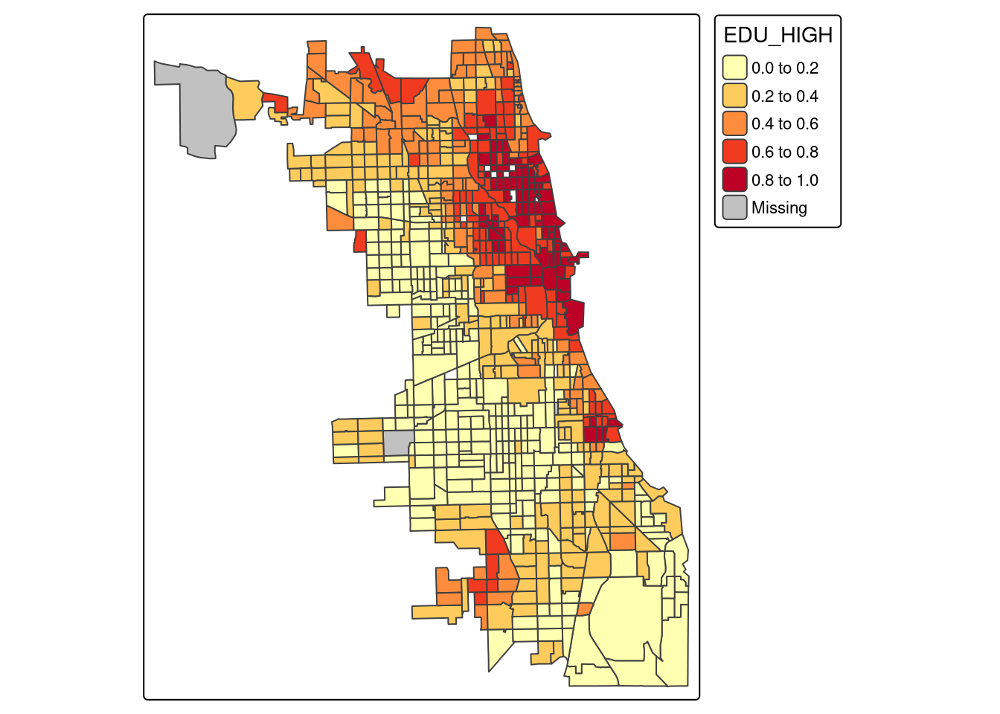

library(tmap)
library(sf)
library(ggplot2)
library(dplyr)4 Eksploracyjna analiza danych przestrzennych
4.1 Eksploracyjna analiza danych
Każda analiza danych przestrzennych powinna być poprzedzona eksploracyjną analizą danych. Celem eksploracyjnej analizy danych jest uzyskanie podstawowych informacji o analizowanych danych.
Sposób wykonania eksploracyjnej analizy danych (np. dobór wykorzystywanych metod) różni się w zależności od posiadanego zbioru danych, jak i od postawionego pytania.
4.1.1 Cele eksploracyjnej analizy danych
Ogólne cele eksploracyjnej analizy danych obejmują:
- Przygotowanie ogólnej charakterystyki danych oraz badanego zjawiska.
- Identyfikacja przestrzennego/czasowego typu próbkowania.
- Ocena relacji zachodzących pomiędzy lokalizacją pomiaru/obserwacji, a czynnikami wpływającymi na zmienność przestrzenną badanych cech.
4.1.2 Eksploracyjna analiza nieprzestrzenna i przestrzenna
Eksploracyjna analiza danych dzieli się na analizę nieprzestrzenną i przestrzenną.
| Nieprzestrzenna | Przestrzenna |
|---|---|
| w analizie uwzględniane są wartości atrybutów, a nie ich lokalizacja | podstawą analizy danych jest lokalizacja obserwacji |
| analiza statystyczna danych wykonywana w oparciu o tabelę atrybutów dołączoną do danych geoprzestrzennych | |
| podstawowe statystyki opisowe, typ rozkładu danych, analiza korelacji, zmienność cechy w grupach | typ próbkowania, ogólny pogląd na zmienność przestrzenną zjawiska |
4.2 Eksploracyjna analiza dla różnych typów danych
4.2.1 Statystyka punktów
Cel:
- określenie w jaki sposób obiekty/zdarzenia są rozmieszczone w przestrzeni
Eksploracyjna analiza danych:
- Sprawdzenie poprawności współrzędnych
- Wgląd w typ próbkowania
- Określenie zależności między lokalizacją, a innymi czynnikami (np. więcej włamań notuje się w obszarach z wysokimi cenami nieruchomości)
4.2.2 Statystyka powierzchni (dane poligonowe)
Cel:
- analiza podobieństwa i różnic między obszarami/regionami
- wyszukanie obszarów podobnych do siebie
- znalezienie obszarów znacząco różnych od sąsiednich
Eksploracyjna analiza danych:
- Charakterystyka statystyczna danych (statystyki podstawowe, wartości odstające globalnie, rozkład danych)
- Sprawdzenie poprawności danych, w tym między innymi identyfikacja danych odstających lokalnie
4.2.3 Geostatystyka
Cel:
- zrozumienie zmienności przestrzennej lub czasowej zjawiska
- szacowanie wartości dla całego obszaru (dane ciągłe) na podstawie danych punktowych (estymacja)
Eksploracyjna analiza danych:
- Charakterystyka statystyczna danych (statystyki podstawowe, wartości odstające globalnie, rozkład danych)
- Sprawdzenie poprawności współrzędnych
- Sprawdzenie poprawności danych, w tym między innymi identyfikacja danych odstających lokalnie
- Wgląd w tym próbkowania
- Ogólny pogląd na zmienność przestrzenną, wykorzystanie prostej automatycznej procedury interpolacji
4.3 Przykład 1. Analiza rozkładu temperatury powietrza
4.3.1 Dane i cel analizy
4.3.1.1 Cel
Celem analizy jest uzyskanie informacji o przestrzennym rozkładzie wartości temperatury w analizowanym obszarze. Dane punktowe przedstawiające lokalizacje pomiaru temperatury powietrza zostaną wykorzystane następnie w analizie geostatystycznej mającej w celu oszacowania wartości dla całego obszaru z wykorzystaniem jednej z geostatystycznych metod estymacji.
4.3.1.2 Dane
Dla analizowanego obszaru dysponujemy:
- danymi punktowymi (punkty.csv) zapisanymi w pliku tekstowym zawierającymi lokalizacje, w których wykonano pomiary temperatury powietrza. Dla każdej lokalizacji dysponujemy także zestawem zmiennych dodatkowych (ndvi, wysokość n.p.m (srtm), klasa pokrycia terenu (clc)).
- plikiem wektorowym w formacie .gpkg (granica.gpkg) zawierającym granicę obszaru analizy.
granica = read_sf("data/granica.gpkg")
#wczytanie danych oraz konwersja do klasy sf
pkt = read.csv("data/punkty.csv")
pkt = pkt[!is.na(pkt$temp), ]
punkty = st_as_sf(pkt, coords = c("x", "y"), crs = "EPSG:2180")str(punkty)Classes 'sf' and 'data.frame': 247 obs. of 6 variables:
$ srtm : num 176 150 273 187 260 ...
$ clc : int 1 1 NA 1 1 2 2 1 1 2 ...
$ temp : num 13.9 15.5 12.8 14.3 15.9 ...
$ ndvi : num 0.616 0.556 0.607 0.376 0.46 ...
$ savi : num 0.419 0.379 0.375 0.239 0.309 ...
$ geometry:sfc_POINT of length 247; first list element: 'XY' num 750298 716732
- attr(*, "sf_column")= chr "geometry"
- attr(*, "agr")= Factor w/ 3 levels "constant","aggregate",..: NA NA NA NA NA
..- attr(*, "names")= chr [1:5] "srtm" "clc" "temp" "ndvi" ...4.3.2 Eksploracyjna nieprzestrzenna analiza danych
4.3.2.1 Podsumowanie numeryczne
Podstawowe informacje o analizowanej zmiennej (w tym przykładzie temperatura powietrza temp) można uzyskać za pomocą funkcji summary(). Dodatkowo można obliczyć inne statystyki opisowe, np. odchylenie standardowe (funkcja sd).
summary(punkty$temp) Min. 1st Qu. Median Mean 3rd Qu. Max.
7.883 12.003 14.941 15.273 17.630 24.945 sd(punkty$temp)[1] 3.9730764.3.2.2 Rozkład danych
Rozkład danych można przedstawić graficznie wykorzystując histogram (geom_histogram) lub estymator jądrowy gęstości (geom_density).
library(ggplot2)
ggplot(punkty, aes(temp)) +
geom_histogram() +
labs(x = "Zmienna temp", y = "Liczba obserwacji") +
theme_bw()`stat_bin()` using `bins = 30`. Pick better value with `binwidth`.ggplot(punkty, aes(temp)) + geom_density() + theme_bw()Dodatkowo rozkład danych można opisać za pomocą dwóch statystyk opisowych: skośności oraz kurtozy.
library(e1071)
skewness(punkty$temp)
kurtosis(punkty$temp)4.3.2.3 Dane globalnie odstające
Dane globalnie odstające to bardzo niskie lub bardzo wysokie wartości względem pozostałych w zbiorze danych. Można je zidentyfikować poprzez wykonanie histogramu oraz obejrzenie rozkładu danych.
4.3.2.4 Zależność między temperaturą, a zmiennymi ndvi i srtm
Do określenia związku między zmiennymi ilościowymi (np. temperaturą a wartościami zmiennych srtm oraz ndvi) można wykorzystać wykres rozrzutu oraz miary korelacji (współczynnik korelacji liniowej lub współczynnik korelacji rang Spearmana). Poniżej wykonano wykresy rozrzutu pokazujące zależnośc między zmienną temp, a ndvi oraz zmienną temp, a srtm.
ggplot(punkty, aes(temp, ndvi)) +
geom_point() +
labs(x = "Zmienna temp", y = "Zmienna ndvi") +
theme_bw()Czy istnieje zależność między zmienną temp, a ndvi?
ggplot(punkty, aes(temp, srtm)) +
geom_point() +
labs(x = "Zmienna temp", y = "Zmienna srtm") +
theme_bw()Warning: Removed 2 rows containing missing values or values outside the scale range
(`geom_point()`).Czy istnieje zależność między zmienną temp, a srtm?
Do liczbowego określenia zależności między zmiennymi wykorzystano test korelacji dla współczynnika korelacji rang Spearmana. Test korelacji wyliczany jest z wykorzystaniem funkcji cor.test(), w której jako metodę (argument method) można podać współczynnik korelacji rang Spearmana (method = “spearman”) lub współczynnik korelacji liniowej Pearsona (method = “pearson”). W wyniku otrzymamy wartość współczynnika korelacji oraz poziom istotności.
cor.test(punkty$temp, punkty$ndvi, method = "spearman")Warning in cor.test.default(punkty$temp, punkty$ndvi, method = "spearman"):
Cannot compute exact p-value with ties
Spearman's rank correlation rho
data: punkty$temp and punkty$ndvi
S = 2378524, p-value = 0.4074
alternative hypothesis: true rho is not equal to 0
sample estimates:
rho
0.05294538 cor.test(punkty$temp, punkty$srtm, method = "spearman")Warning in cor.test.default(punkty$temp, punkty$srtm, method = "spearman"):
Cannot compute exact p-value with ties
Spearman's rank correlation rho
data: punkty$temp and punkty$srtm
S = 2866567, p-value = 0.00782
alternative hypothesis: true rho is not equal to 0
sample estimates:
rho
-0.1695597 Jaka jest wartość korelacji dla zmiennych temp/ndvi, oraz temp/srtm? Czy w każdym z przypadków uzyskano wynik istotny statystycznie?
Zmienność temperatury w klasach pokrycia terenu
Zależność między zmienną ilościową a jakościową można przedstawić na wykresie pudełkowym.
punkty$clc = as.factor(punkty$clc)
ggplot(punkty, aes(x = clc, y = temp)) +
geom_boxplot() +
labs(x = "Zmienna clc", y = "Zmienna temp") +
theme_bw()Czy temperatura różnicuje się w zależności od klasy pokrycia terenu?
Do określenia istotności różnić średniej pomiędzy grupami można wykorzystać analizę wariancji. Analiza wariancji (ang. Analysis of Variance - ANOVA) służy do testowania istotności różnic między średnimi w wielu grupach. Metoda ta służy do oceny czy średnie wartości cechy Y różnią się istotnie pomiędzy grupami wyznaczonymi przez zmienną X.
aov_test = aov(temp ~ clc, data = punkty)
summary(aov_test) Df Sum Sq Mean Sq F value Pr(>F)
clc 2 1272 636.0 60.86 <2e-16 ***
Residuals 239 2498 10.4
---
Signif. codes: 0 '***' 0.001 '**' 0.01 '*' 0.05 '.' 0.1 ' ' 1
5 observations deleted due to missingnessANOVA nie pozwala natomiast na stwierdzenie między którymi grupami występują różnice. Aby to stwierdzić konieczne jest wykonanie porównań wielokrotnych (post-hoc), np. testu Tukeya.
tukey = TukeyHSD(aov_test, "clc")
plot(tukey, las = 1)Czy temperatura różnicuje się istotnie w zależności od klasy pokrycia terenu?
4.3.3 Eksploracyjna przestrzenna analiza danych
Do sprawdzenia poprawności współrzędnych, określenia typu próbkowania oraz identyfikacji danych odstających lokalnie można wykorzystać mapę lokalizacyjną pokazującą lokalizację wykonania pomiarów. Mapę lokalizacyjną można wykonać wykorzystując pakiet tmap.
4.3.3.1 Sprawdzenie poprawności współrzędnych oraz określenie typu próbkowania
- Czy współrzędne są w odpowiednim porządku (X-Y, Y-X)?
- Czy współrzędne są w odpowiednim układzie?
- Czy wszystkie punkty znajdują się na badanym obszarze?
tm_shape(granica) +
tm_polygons() +
tm_shape(punkty) +
tm_symbols() +
tm_grid()Sprawdzenie poprawności danych oraz identyfikacja danych odstających lokalnie
tm_shape(punkty) +
tm_graticules(labels.show = FALSE) +
tm_symbols(col = "temp",
style = "cont",
n = 10,
palette = "-Spectral",
title.col = "Zmienna temp")
4.4 Przykład 2: Analiza przestępczości w hrabstwie Cook
4.4.1 Dane
Plik socio_economic_variables.gpkg dostarcza danych społeczno-ekonomicznych dla obszaru hrabstwa Cook (centralna część miasta Chicago). Dane te pochodzą ze zbioru danych American Community Survey: ACS 2016-2020.
Plik crimes_vehicle_theft.gpkg zawiera lokalizacje przestępstw (kradzieży samochodów) dla centralnej części Chicago dla 2020 roku.
socio_data = read_sf("data/socio_economic_variables.gpkg")
crimes = read_sf("data/crimes_vehicle_theft.gpkg")tm_shape(socio_data) +
tm_borders(col = "grey") +
tm_shape(crimes) +
tm_dots(fill = "red")Kolorem czerwonym zaznaczono lokalizacje przestępstw (kradzieży samochodów), a szarym granice obszarów spisowych w hrabstwie Cook, dla których pozyskano dane ekonomiczne.
Wykorzystując funkcję str() możemy uzyskać podstawowe informacje o analizowanych zmiennych.
str(socio_data)sf [1,332 × 23] (S3: sf/tbl_df/tbl/data.frame)
$ GEOID : chr [1:1332] "17031822400" "17031740100" "17031530501" "17031830300" ...
$ POP : num [1:1332] 6214 2962 5073 4536 2523 ...
$ WHITE : num [1:1332] 0.6999 0.8383 0.0195 0.2277 0.8922 ...
$ BLACK : num [1:1332] 0.00724 0 0.94067 0.74757 0.04201 ...
$ ASIAN : num [1:1332] 0.0439 0.0135 0 0.0117 0.0103 ...
$ HISPANIC : num [1:1332] 0.242 0.1435 0.0264 0.0126 0.0289 ...
$ FOREIGN_BORN : num [1:1332] 0.2948 0.023 0.0199 0.0423 0.0258 ...
$ UNEMPL : num [1:1332] 0.0339 0.0554 0.2593 0.1521 0.0249 ...
$ PUBLIC_ASSIST : num [1:1332] 0.1664 0.0565 0.4314 0.183 0.0387 ...
$ VACANT : num [1:1332] 0.1591 0.0884 0.2364 0.1074 0.0459 ...
$ OCCUPIED : num [1:1332] 1 1 1 1 1 ...
$ OWNER : num [1:1332] 0.662 0.851 0.567 0.416 0.828 ...
$ RENTER : num [1:1332] 0.338 0.149 0.433 0.584 0.172 ...
$ MEDIAN_INCOME : num [1:1332] 51782 84800 45651 48491 102543 ...
$ MEDIAN_BUILT_YEAR: num [1:1332] 1972 1954 0 1958 1947 ...
$ MEDIAN_HOME_VALUE: num [1:1332] 204900 245200 121100 26000 285700 ...
$ OTHER : num [1:1332] 0.993 0.995 0.987 1 0.973 ...
$ SEX_RATIO : num [1:1332] 0.000974 0.001032 0.0008 0.000715 0.000941 ...
$ EDU_HIGH : num [1:1332] 0.209 0.33 0.142 0.321 0.619 ...
$ HOME_VALUES_CAT : chr [1:1332] "medium" "medium" "low" "low" ...
$ INCOME_CAT : chr [1:1332] "medium" "medium" "low" "medium" ...
$ BUILT_YEAR_CAT : chr [1:1332] "medium" "medium" "old" "medium" ...
$ geom :sfc_MULTIPOLYGON of length 1332; first list element: List of 1
..$ :List of 1
.. ..$ : num [1:37, 1:2] -87.8 -87.8 -87.8 -87.8 -87.8 ...
..- attr(*, "class")= chr [1:3] "XY" "MULTIPOLYGON" "sfg"
- attr(*, "sf_column")= chr "geom"
- attr(*, "agr")= Factor w/ 3 levels "constant","aggregate",..: NA NA NA NA NA NA NA NA NA NA ...
..- attr(*, "names")= chr [1:22] "GEOID" "POP" "WHITE" "BLACK" ...Ramka danych socio_data zawiera szereg zmiennych społeczno-ekonomicznych i demograficznych:
- liczbę ludności w każdym obszarze spisowym (POP)
- odsetek ludności w podziale na grupy rasowo-etniczne (WHITE, BLACK, ASIAN, HISPANIC, OTHER)
- odsetek osób urodzonych za granicą (FOREIGN_BORN)
- odsetek osób bezrobotnych (UNEMPL)
- odsetek osób korzystających z pomocy społecznej (PUBLIC_ASSIST)
- odsetek niezamieszkłaych domów oraz mieszkań (VACANT)
- odsetek zamieszkałych domów oraz mieszkań (OCCUPPIED)
- odsetek domów/mieszkań zamieszkałych przez właściciela (OWNER)
- odsetek domów/mieszkań zamieszkałych przez osoby wynajmujące (RENTER)
- mediana dochodów w obszarze spisowym (MEDIAN_INCOME)
- mediana wieku zabudowy w obszarze spisowym (MEDIAN_BUILT_YEAR)
- mediana wartości domów w obszarze spisowym (MEDIAN_HOME_VALUE)
- odsetek osób w wyższym wykształceniem (EDU_HIGH)
- wartość domów: niska, średnia, wysoka (HOME_VALUES_CAT)
- dochód: niski, średni, wysoki (INCOME_CAT)
- wiek zabudowy: nowa, średnia, stara zabudowa (BUILT_YEAR_CAT)
4.4.2 Cel analizy
Celem analizy jest znalezienie czynników społeczno-ekonomicznych wpływających na poziom przestępczości (kradzieży samochodów). Czy istnieje zależność między poziomem przestępczości, a zmiennymi społeczno-ekonomicznymi?
4.4.3 Przygotowanie danych do analizy
- Ujednolicenie układów współrzędnych między warstwami.
Lokalizacja przestępstw jest w układzie WGS84, warstwę trzeba przekształcić do układu warstwy z danymi społeczno-ekonomicznymi.
crimes = st_transform(crimes, st_crs(socio_data))- selekcja obszarow spisowych, w których zlokalizowane są przestępstwa.
socio_data = socio_data[crimes, ]- zliczenie przestępstw w obszarach spisowych
socio_data$NB_CRIMES <- lengths(st_intersects(socio_data, crimes))- obliczenie odsetka przestępst na 1000 mieszkańców (ang. crime rates)
socio_data$CRIME_RATE = (socio_data$NB_CRIMES/socio_data$POP)*1000- utworzenie ramki danych bez kolumny z geometrią (będzie potrzebne przy części analiz statystycznych)
socio_data_attr = socio_data
socio_data_attr$geom <-NULL4.4.4 Eksploracyjna nieprzestrzenna analiza danych
Podsumowanie numeryczne
summary(socio_data_attr) GEOID POP WHITE BLACK
Length:788 Min. : 0 Min. :0.00000 Min. :0.00000
Class :character 1st Qu.: 2044 1st Qu.:0.03004 1st Qu.:0.02311
Mode :character Median : 3142 Median :0.22915 Median :0.09334
Mean : 3440 Mean :0.30523 Mean :0.34852
3rd Qu.: 4570 3rd Qu.:0.57202 3rd Qu.:0.81515
Max. :10974 Max. :0.92883 Max. :1.00000
NA's :3 NA's :3
ASIAN HISPANIC FOREIGN_BORN UNEMPL
Min. :0.00000 Min. :0.00000 Min. :0.0000 Min. :0.00000
1st Qu.:0.00000 1st Qu.:0.04447 1st Qu.:0.0458 1st Qu.:0.03864
Median :0.02261 Median :0.13664 Median :0.1531 Median :0.07256
Mean :0.06003 Mean :0.26169 Mean :0.1803 Mean :0.09981
3rd Qu.:0.07913 3rd Qu.:0.40534 3rd Qu.:0.2974 3rd Qu.:0.14334
Max. :0.84913 Max. :0.98900 Max. :0.6585 Max. :0.46776
NA's :3 NA's :3 NA's :3 NA's :3
PUBLIC_ASSIST VACANT OCCUPIED OWNER
Min. :0.00000 Min. :0.00000 Min. :0.9983 Min. :0.0000
1st Qu.:0.07705 1st Qu.:0.06515 1st Qu.:0.9998 1st Qu.:0.2993
Median :0.17330 Median :0.09682 Median :0.9999 Median :0.4352
Mean :0.21870 Mean :0.11825 Mean :0.9999 Mean :0.4516
3rd Qu.:0.33914 3rd Qu.:0.14966 3rd Qu.:1.0000 3rd Qu.:0.5860
Max. :0.77023 Max. :0.47222 Max. :1.0000 Max. :0.9745
NA's :3 NA's :3 NA's :3 NA's :3
RENTER MEDIAN_INCOME MEDIAN_BUILT_YEAR MEDIAN_HOME_VALUE
Min. :0.02548 Min. : 12328 Min. : 0 Min. : 65500
1st Qu.:0.41399 1st Qu.: 38394 1st Qu.: 0 1st Qu.: 168600
Median :0.56484 Median : 55062 Median :1945 Median : 248700
Mean :0.54843 Mean : 63882 Mean :1148 Mean : 288966
3rd Qu.:0.70067 3rd Qu.: 80872 3rd Qu.:1957 3rd Qu.: 368300
Max. :1.00000 Max. :216667 Max. :2006 Max. :1245500
NA's :3 NA's :8 NA's :3 NA's :19
OTHER SEX_RATIO EDU_HIGH HOME_VALUES_CAT
Min. :0.8020 Min. :0.0004454 Min. :0.01092 Length:788
1st Qu.:0.9636 1st Qu.:0.0008190 1st Qu.:0.15302 Class :character
Median :0.9821 Median :0.0009405 Median :0.30406 Mode :character
Mean :0.9755 Mean :0.0009558 Mean :0.38004
3rd Qu.:0.9960 3rd Qu.:0.0010612 3rd Qu.:0.59072
Max. :1.0000 Max. :0.0088278 Max. :0.93945
NA's :3 NA's :3 NA's :3
INCOME_CAT BUILT_YEAR_CAT NB_CRIMES CRIME_RATE
Length:788 Length:788 Min. : 1.00 Min. :0.1563
Class :character Class :character 1st Qu.: 5.00 1st Qu.:1.5722
Mode :character Mode :character Median : 9.00 Median :2.9283
Mean :12.53 Mean : Inf
3rd Qu.:16.00 3rd Qu.:6.1173
Max. :92.00 Max. : Inf
table(socio_data_attr$INCOME_CAT)
high low medium
151 282 347 table(socio_data_attr$HOME_VALUES_CAT)
high low medium
207 198 364 table(socio_data_attr$BUILT_YEAR_CAT)
medium new old
312 16 457 4.4.4.1 Rozkład danych o przestępczości
ggplot(socio_data_attr, aes(x = CRIME_RATE)) + geom_histogram() + theme_bw()`stat_bin()` using `bins = 30`. Pick better value with `binwidth`.Warning: Removed 3 rows containing non-finite outside the scale range
(`stat_bin()`).4.4.4.2 Zależność między odsetkiem przestępstw a zmiennymi społeczno-ekonomicznymi
cor = cor(socio_data_attr[24], socio_data_attr[3:19], method = "spearman", use = "complete.obs")
round(cor, 2) WHITE BLACK ASIAN HISPANIC FOREIGN_BORN UNEMPL PUBLIC_ASSIST VACANT
CRIME_RATE -0.58 0.64 -0.49 -0.41 -0.54 0.48 0.55 0.53
OCCUPIED OWNER RENTER MEDIAN_INCOME MEDIAN_BUILT_YEAR
CRIME_RATE -0.54 -0.35 0.35 -0.5 -0.01
MEDIAN_HOME_VALUE OTHER SEX_RATIO EDU_HIGH
CRIME_RATE -0.41 0.15 -0.26 -0.37W kolejnym kroku zostaną wyselekcjonowane wartości współczynnika korelacji +/- 0,5, a następnie dla nich zostaną wykonane wykresy rozrzutu.
cor_v = as.vector(cor)
names(cor_v) = colnames(cor)
sel_cor = cor_v[abs(cor)>0.5]
round(sel_cor, 2) WHITE BLACK FOREIGN_BORN PUBLIC_ASSIST VACANT
-0.58 0.64 -0.54 0.55 0.53
OCCUPIED
-0.54 Objaśnienie zmiennych:
- WHITE - odsetek ludności białych
- BLACK - odsetek ludności czarnej
- FOREIGN_BORN - odsetek ludności urodzonej zagranicą
- PUBLIC ASSIST - odestek gospodarstw domowych korzystających z pomocy społecznej
- VACANT - odsetek niezamieszkałych budynków
- OCCUPIED - odsetek zamieszkałych budynkówWizualizacja zależności między zmiennymi ze współczynnikiem korelacji +/- 0,5.
library(PerformanceAnalytics)
list_variables = names(sel_cor)
chart.Correlation(socio_data_attr[, c("CRIME_RATE", list_variables)], histogram=TRUE, pch=19, method = "spearman")4.4.4.3 Zmienność odsetka przestępczości w klasach poziomu dochodu, cen domów oraz wieku zabudowy
- Zależność między odsetkiem przestępczości a poziomem dochodów.
Wyróżniono 3 klasy używając zmiennej MEDIAN_INCOME:
- low - wartości dochodów niższe od kwartyla 1.
- medium - wartości dochodów między 1 i 3 kwartylem.
- high - wartości dochodów wyższe do 3. kwartyla.
library(dplyr)
socio_data_attr %>% na.omit() %>%
mutate(INCOME_CAT = factor(INCOME_CAT,level=c("low", "medium", "high"))) %>%
ggplot(., aes(x = INCOME_CAT, y = CRIME_RATE)) +
geom_boxplot() +
xlab("Household income") + ylab("Crime rates") +
theme_bw()- Zależność między odsetkiem przestępczości a cenami domów.
Wyróżniono 3 klasy używając zmiennej MEDIAN_HOME_VALUE:
- low - wartości cen domów niższe od kwartyla 1.
- medium - wartości cen domów między 1 i 3 kwartylem.
- high - wartości cen domów wyższe do 3. kwartyla.
socio_data_attr %>% na.omit() %>%
mutate(HOME_VALUES_CAT = factor(HOME_VALUES_CAT,level=c("low", "medium", "high"))) %>%
ggplot(., aes(x = HOME_VALUES_CAT, y = CRIME_RATE)) +
geom_boxplot() +
xlab("Home values") + ylab("Crime rates") +
theme_bw()- Zależnośc między odsetkiem przestęczpości, a wiekiem zabudowy.
Wyróżnione zostały 3 klasy zabudowy:
- old - wybudowane przed 1950,
- medium - wybudowane między 1950 a 2000,
- new - wybudowane po 2000.
socio_data_attr %>% na.omit() %>%
mutate(BUILT_YEAR_CAT = factor(BUILT_YEAR_CAT,level=c("old", "medium", "new"))) %>%
ggplot(., aes(x = BUILT_YEAR_CAT, y = CRIME_RATE)) +
geom_boxplot() +
xlab("Housing age") + ylab("Crime rates") +
theme_bw()4.4.5 Eksploracyjna przestrzenna analiza danych
Eksploracyjna przestrzenna analiza danych obejmuje przede wszystkim wizualizację zmiennych społeczno-ekonomicznych oraz odsetka przestępczości w celu wizualnego określenia, czy istnieją obszary o wysokim/niskim odsetku przestępczości i czy są one powiązane z wyższymi/niższymi wartościami zmiennych społeczno-ekonomicznych.
Wizualizacja danych ma także na celu sprawdzenie poprawności danych, w tym między innymi identyfikacja danych odstających lokalnie.
4.4.5.1 Odsetek przestępczości
tm_shape(socio_data) +
tm_polygons(fill = "CRIME_RATE", palette = "YlOrRd", n = 4, style = 'jenks')4.4.5.2 Struktura rasowo-etniczna ludności
tm_shape(socio_data) +
tm_polygons(fill = "WHITE", palette = "YlOrRd")tm_shape(socio_data) +
tm_polygons(fill = "BLACK", palette = "YlOrRd") tm_shape(socio_data) +
tm_polygons(fill = "FOREIGN_BORN", palette = "YlOrRd", n = 3) 4.4.5.3 Poziom wykształcenia
tm_shape(socio_data) +
tm_polygons(fill = "EDU_HIGH", palette = "YlOrRd")
4.4.5.4 Zabudowa niezamieszkała
tm_shape(socio_data) +
tm_polygons(fill = "VACANT", palette = "YlOrRd")4.4.5.5 Poziom dochodów
tm_shape(socio_data) +
tm_polygons(fill = "INCOME_CAT", palette = c(low="#FFF68F", medium="#EEB422", high="#FF4040"))4.4.5.6 Ceny domów
tm_shape(socio_data) +
tm_polygons(fill = "HOME_VALUES_CAT", palette = c(low="#FFF68F", medium="#EEB422", high="#FF4040"))4.4.5.7 Wiek zabudowy
tm_shape(socio_data) +
tm_polygons(fill = "BUILT_YEAR_CAT", palette = c(old="#FFF68F", medium="#EEB422", new="#FF4040"))4.4.6 Podsumowanie
Przeprowadzona analiza korelacji wskazała na istnienie słabej zależności:
- wprostproporcjonalnej przekraczającej 0.5 między odsetkiem przestępstw na 1000 mieszkańców a odsetkiem czarnych (zmienna BLACK) oraz odsetkiem niezamieszkałej zabudowy (zmienna VACANT) oraz odsetkiem osób korzystających z pomocy społecznej
- odwrotnieproporcjonalnej przekraczającej 0.5 między odsetkiem przestępstw na 1000 miekszańców a odsetkiem ludności białej (zmienna WHITE), odsetkiem zamieszkałej zabudowy (zmienna OCCUPIED) oraz odsetkiem osób urodzonych za granicą.
Analiza wykresów pudełkowych pokazuje, że odsetek przestępczości przyjmuje wyższe wartości dla klasy o niskich dochodach, niskich cenach domów oraz dla obszarów o nowej zabudowie (powstałej po 2000 roku).
Obszary o niskim dochodzie (184 obszary), a także o małej wartości domów (258 obszarów) są zlokalizowane przede wszystkim w południowej części analizowanego obszaru.
Mapa przestępczości pokazuje wyższe wartości w południowej części analizowanego obszaru oraz środkowej części obszaru.